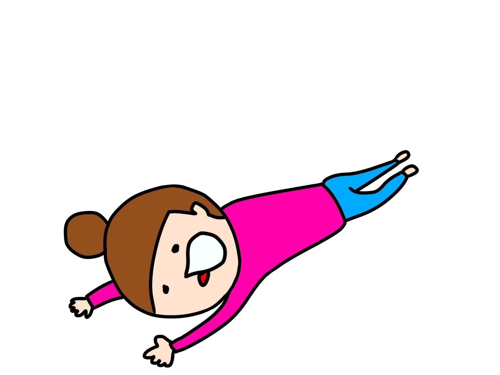

| HSPですが、３人子育てしています。: 繊細で、一人でいること大好きな私が3人のママに⁉ 生きにくいけど、なんとか生きています。 | |
| 中西 にこり | |
| nikori syuppan (2019) | |
この本を手に取って下さり、本当にありがとうございます。本書を通して、あなたに出会えたことに感謝しています。
周りの人の表情から感情を読み取ってしまう。他人の感情の変化に敏感。
他人と雑談できない。世間話が苦手。深い話をしたい欲求がある。
耳が敏感。大きな音が苦手。
ストレスを感じると、一人になりたくなる。
ずっと一人でいても平気。孤独だけれど孤独じゃない。
自分の好きなことに没頭している時が何より幸せ。
自分のペースを乱されるのがとてもストレスに感じる。
寒さ・冷えを感じやすい。
まぶしい光が苦手。
恐怖を感じさせる映像、言葉、イメージが苦手。
これらは全て、「ハイリー・センシティブ・パーソン（HSP：Highly Sensitive Person）」にあてはまる私の特徴です。
思春期頃から他人と一緒にいることが苦手になり、
「どうして私はみんなのように楽しくお話できないんだろう？」
「人と一緒にいると、どうしてこんなに疲れるんだろう？」
とずっと劣等感を持ってきました。
そんな私は今や3人の子供のお母さん。自分でもびっくりです。
この本では、HSPである私が周りの世界をどのように感じているか、
どんなことに悩みながら母親になったのか。
バタバタな子育て、刺激を避けるための工夫、生活術などをお伝えいたします。
ぜひ「気にしすぎじゃない！？」とツッコミを入れてください。
そして「こんな人でも母親やっていけるんだ」と笑ってくだされば嬉しいです。
私が見える外の世界。人の表情、雰囲気からいろんな情報を読み取ってしまう。
私がどんな幼少期を過ごしていたか、お話しますね。
とても大人しく、一人で何か黙々と作業するのが好きでした。
ジグソーパズル、工作、絵本作り、絵本の朗読をテープに録音、詩を作る、散歩。
全部、一人で。
親に言われてやらせられる、ということもなく、自分で考えたアイデアを一人でやって楽しむ、というのが大好きな女の子でした。
兄弟と遊ぶこともありましたが、一人遊びのほうが多かった気がします。
私の母も、「手がかからなくて育てやすかったわ（笑）」と今でも言っています。
小学校に入ると、特に女の子たちは仲良しグループを作り始めますよね。
小学生のころは大丈夫だったのですが、中学生あたりからグループの中にいることに違和感を感じ始めてきました。
お友達のノリやテンションについていけなくなり、うまく合わせることが難しくなってきたのです。
だんだん一人にいる方が気楽さを感じ始めるようになりました。
人当たりはよいので、友達は声をかけてくれますが、教室移動、トイレなどは一人。
高校生くらいから、人と仲良くなりすぎないのが自分にとってはちょうどいい、という他人との距離感に気づき始めました。
人生の中で、最も若さを謳歌して自由を楽しめる大学時代。私にとっては苦しいものでした。
この頃、他人との距離感の取り方、集団に馴染むことへの難しさを感じました。
一人の方が楽なんだけれど、「こんな私って変？」といつも考えていました。
周りの人は、気の合うもの同士グループを作って楽しそうに見えましたが、私にはそれができませんでした。
テンポよく、ノリよく会話をするのが難しく、話の内容も正直おもしろく感じられなかったのです。
今日はこの人と会うと分かっている時は、話題の内容、リアクションの取り方、顔の表情から、全て事前にシュミレーション してから挑みます。
人と会話した後は、
「もっとこの言葉をかけてあげれば喜んでもらえたんじゃないか」
「あの一言がまずかったかな、傷つけてしまったのではないか」
「ちょっと自分の本音を言いすぎちゃった。変に思われたかな」
と、 一人反省会 です。
また不思議なことに、 会話が終わった後も、自分や相手の発言がしばらく頭の中に残っていて何回もリピートされる のです。
これが数日間続くので、とても頭が疲れます。
メールの文もかなり校正してから「これでいいかな」と送っています。送った後は「この文字にしなきゃよかったーー」と気になってしまいます。
最近LINEを始めてからは、
「この文脈にはこの表情の絵文字かな、いやこのスタンプで感情を出し切るかな」と考えています。
やれやれですね・・・
大学時代は少し病的になっていて、友達が離れているところで会話しているのを見ると、
「私のことを話しているのではないか」とか、
私を含め３－４人で話している時に、誰も私の目を見て話してくれないと、
「私に興味がないんだ、嫌っているのかな」
とか勝手に思ってしまうのです。
こんな風に書いていると自分でもあきれますが・・・。
今でもこのクセは出てしまうことがありますね。頭が勝手に働いている感じです。
顔を合わせると話したりできる友達もいましたが、いつも一緒にいると気を使って疲れるので、 基本は一人 。交友関係は、広く浅くでした。
大学の授業は席が自由ですので、みんな仲間と一緒に座るのですが、私はいつもポツンと一人。
もし教室でたった一人だったら、孤独に感じることはなかったかもしれません。
でも、周囲からクラスメートの雑談の声や笑い声が聞こえてくると、やはり疎外感を感じてしまうのでした。
「どうしてみんなあんな風に楽しそうにおしゃべりできるんだろう。なんで私は馴染めないんだろう。私はおかしいんじゃないか」
自分で自分を疑って、コミュニケーションに関連する本を読み漁りました。
この頃、私が読んでいた本は「対人恐怖症」「強迫神経症」「雑談が上手になるテクニック」「心理学」など。
精神疾患、人間関係のマニュアル本が多かったですね。
一応、サークルにも所属していました。
しかし、本当につらかったのが飲み会やコンパです。
飲み会ではお酒が入るとみんな興奮して大声で話すので、耳がワンワンと痛くなります。
それに私の場合、 自分が話している人の声を聞きながら、周りで話している人の会話の内容が理解できるくらい耳に入ってきてしまう ので、頭がいっぱいになるのです。
とても疲れました。いつも飲み会をどう断ろうか考えていました。仮病をつかってドタキャンすることも度々。
他人と必死に馴染もうとしながらも、はやり居心地の悪さを感じ、疲れてしまって逃げる 、そのくり返しでした。
就職してからは、 職場ではいつも人に見られているような気がしてリラックスできず。
職場は男社会。職場の雰囲気に合わせようと元気よく、テンション高めにがんばりましたが、やはり無理がたたってグッタリ・・・。
反対に、コミュニケーションが上手な同僚の株がどんどん上がっていくのを見て、
「いいなあ。私はやっぱりこの仕事、向いていない・・・」
と落ち込んでいました。
本当に疲れました。
仕事がないときは、職場の個室に勝手にこもっていました。
夜勤もあったのですが自分にはハード過ぎてできなかったので、仕事を軽減してもらうことに。
本当に職場にいるのが嫌で、時間があれば個室にこもっていましたね。
結婚後、夫の勤務先が変わったため、退職。
その後、妊娠、出産することになります。
外を歩いていて、ちらりと他人を見ただけでその人からいろんな情報が飛び込んできます。
「何かに悩んでいそうだな」
「あの病気を持っていそうだな」
「すごい目がキラキラしていて心がきれいそうだな」
「青色が好きなんだな」
「顔を整形している」
「きっとニキビで悩んでいるんだろうな」
「あの人にはあの服が似合うと思う」
「優しそうだな」
「あの人には近づかないようにしよう」
「あの服はあのメーカーの服だ」
「何か楽しいことがあったんだろうな」
「言葉では謝っているけれどそれは自分を守るためなんだろうな」
「足が悪そう、大丈夫かな」
「嬉しそうにメールしてる、相手は彼氏かな」
私が意図しなくても勝手に脳が処理している感じです。
特に大勢の人が集まる場所に行くと、情報が目から一気に入ってきて疲弊・・・。
コンタクトレンズを外して裸眼にしてみると、外の世界がぼやけて感じにくくなり、結構リラックスできることに気づきました。
出産後にレーシックをしてしまったので、もうこの作戦は使えません・・・普段はなるべく大人数が集まる所には行かないようにしています。
出産後、私に大きな変化が訪れました。出産は私にとって人生で一番の貴重な体験でした。もちろん人生で一番痛かったですが・・・
今までずっと「私、私」と自分のことしか考えていなかったのが、出産してから、他人を心から愛することを知りました。
（旦那さん、ごめんなさい（＾＾；））
出産後はハートのチャクラが開いた感じになり、どんどん周りに愛をあげたくなります。
そして感謝の気持ちが湧き上がってきました。何より、やはり両親への感謝です。
出産するまでは「ここまでやってきたのは私一人の努力でがんばってきたから」と思い上がりもはなはだしいくらい勘違いしてきました。
子育ての大変さを通して、
「ここまで大きくしてくれて、お金も出してくれて、愛を与えてくれて、本当にありがとう」
という心からの感謝の気持ちがわいてきました。
これも大きな変化ですね。出産して子育てしているうちにメンタルが強くなったのかわかりませんが、前よりも人目が気にならなくなりました。
それまでは迷いながら出していた自分の言いたいこと、やりたいことをそのままストレートに出せるようになりました。もしかしたら、子供たちの存在が私の心を強くしてくれているのかもしれません。
ママ友ゼロでしたが、ずっと子供と一緒に２人きりでも平気。初めての子育てでもちろん大変でしたが、子供がいる生活は幸せでした。
こんなかわいい子がもう一人いたらいいな、と2人目も無事に出産。
知り合いのご家族に３人お子さんがいるのを見て、
「3人いるともっと楽しいかも、大きくなったら３人がお互いを助け合えるしいいかな」
と考え、3人子供がいる家庭を想像し始めました。
日本では、ほとんどの方が「会社員」「店員」「先生」「受付」など、その人の役割の仮面をかぶって働いているように私には見えます。
コンビニの店員さんはそれらしく、服屋の店員さんはそれらしく声を作って「いらっしゃいませー」
セリフのような接客の言葉。
お母さんらしく子供に「今はダメ、あとでね、おすわりしなさい」
など。もちろん、外ではみんな自分を守るために仮面（ペルソナ）をつけるもの。
でも、私にはその人が個性を押し殺して仕事をしているように見えて、勝手に切なくなってしまいます。
日本の飛行機で働くキャビンアテンダント（ＣＡ）さんに、とってもすまなそうな表情を作りながら「申し訳ございません！」と謝られるより、
海外のＣＡさんの「だから何」という感じで対応されるほうが、私にとっては違和感なく受け入れられます。
海外に住んでみると、日本での接客に更に違和感を感じてしまいます。
結構、 海外の人は「その人のまま」で働いています。
子供を見るとニッコリ。
ボケーっとしていたり、やる気なさそう。
暇な時はスマホをいじる。
「お釣りないからいいよ」とオマケしてくれたり、お店の商品を子供にくれるレジの人。
すべて、ナチュラル。
その人がそうしたいから、自然にふるまっているのです。
私は自然体のその人らしい表情を見たり、話し方をされるのが大好き。「その人」を生きているんだな、とこちらもリラックスします。
私は接客の質よりも、自然体のままが好きなんですね。
それはきっと私もそのようになりたいから。ナチュラルが理想の姿だからなんでしょうね。
3人子供がいたらいいなあ、と思っていたら本当に恵まれました。神さまに感謝です。
しかし、真ん中の子が発達がゆっくりで手がかかることもあり、私の容量はオーバーしてしまうことに。
私のダメ母ぶりをお話します。
我が家の3人の子供は、下2人はまだ幼稚園、上が小学校低学年。（令和元年現在）
そしてみんなとても元気。我が家の毎日はこんな感じです。
「ママ、水飲みたい！」
「おなかすいたー」
「ママ、今日学校でこのお話読んだんだ、今から読んで聞かせるね！ペラペラペラ・・・（全部話し始める）」
「こぼしちゃったー」
「ママ、○○（妹）ちゃんがたたいたー」
「ママ、何それ？新しいの？買ったの？」
「ガガガ―――――――――（椅子を勝手に動かす音）」
「○○（妹）ちゃんやめてー、さわんないで！それあたしの！」
「ママ、ぬげないー」
「おなかすいたー」
「ドン、ドン、ドン（テーブルに上って踊り始める）」
・・・・・・・・・・・・( ﾟДﾟ)チーン
私の頭はパンク。ストレスを感じると一人になりたくなるのですが、お世話をしなくてはいけないのでできません。
下の子が赤ちゃんの時は、自分の食事もゆっくり摂ることができず、やせていきました。。
イヤイヤ期真っ最中の下2人。二人で食べ物やおもちゃを取り合いしてケンカすることも多く、
「キーーーーーー！」
「イーーーーヤーーーーーー！」
と甲高い、お猿さんのような声を出すのです。
耳が敏感な私にとって、これが本当につらい。
ノイズキャンセリングのヘッドホンを買おうかと本気で思いましたが、子供が危険な状態になっているのを気づけないといけないので、耳栓をして耐えます。
子供の声でストレスを感じそうになったら耳栓！
これで音量は半分になり、まだマシに。
私自身が大人しい子供だったので、子供がこんなにうるさいとは思いませんでした。。元気が一番！なんですがね・・・。
子供たちが大好きでよく見るYoutube番組の音声は、私にはごちゃごちゃの騒音にしか聞こえず、いつも「音を下げて！」と注意しています。
子供の音がなるおもちゃも、耳障りになるのでなるべく家には置かないようにしています。
本当は繊細な音、自然な音、美しい音が好みなんですが・・・子供たちはダンスが大好き。学校や園からいろいろ覚えてきます。
自分一人だったら絶対聞かない音楽（『U●A』など）を我慢して流しています。
一人だけの時間は、HSPの私にとって本当に必要なもの。
旦那さんのヘルプもあるので有難いのですが、やっぱり子供たちに手がかかる幼児期は母親ががんばらなければいけない時です。
一番下の子が小さいころはずっと一日中一緒で、お昼寝したと思えば家事をこなす毎日。
頭の中は「次は家事をして、絵本の読み聞かせをして、ご飯の準備をして、お迎えに行って」と目まぐるしく、大好きな読書、ポケーっとする時間がなくなり、生活の余白がなくなってしまいました。
そんな矢先に、HSPについて知ることになります。
その特性にピタリと当てはまり、自分の性格に説明がついた感じがして心がホッとしました。
他にも同じ方がいらっしゃることを知って
「私だけがおかしい、変なんだ」とは思わなくなりました。
他のお母さん方も経験あると思いますが、子供にイライラして怒った後、
「あんなに怒っちゃった。私ってダメなお母さん・・・」
と罪悪感に陥ってしまうこと、私も毎日でした。
これまで多くの育児書も読んできましたし、アンガーマネージメントなどについても勉強しましたが、怒りはやはり沸いてくるもの。
その怒りって、
「もういっぱいいっぱい」「疲れたよ」
「私はみんなのためにこんなにやっているのに、誰か手伝ってよ」
という もう一人の自分、インナーチャイルドの叫び ということを知ってから、今はインナーチャイルドワークを生活に取り入れています。
「そんなストレスになるんだったら、3人も産まなきゃよかったのに」
と言われてしまいそうですね。
本当にその通りで、私もそう思ったことがあります。
毎日の育児のストレスから、
「子供が3人いたら楽しいと思って産んだのに、どうしてこんなに毎日大変なんだろう」
「3人もいたらお金かかるよね、将来大丈夫かな・・・」
「私がこんな母親で、3人ともしっかり育てられるのかな・・・」
と、悪い思考へどんどんハマってしまい、頭の中が常に不安でいっぱいに。
ついに自律神経失調症になり、体調を崩してしまいました。
ガタガタと心と体を崩してしまった原因は、私の完璧主義の思考、責任感が強すぎる性格からきていました。
「3人をしっかり育てて、自立させなければ」
「母親なんだから強くなくちゃ、しっかりしなくちゃ」
「子供たちが望むことを全てやってあげなくちゃ」
子供のことだけを考え、いつも気を張って緊張して、子供に接していたのです。
私の母親が、何も文句も言うことなく家事をして、子供たちの話をなんでも聞いてくれる、本当に優しい人なのです。
その理想の母親像を目指していたわけですが、もともとそうではないのにあまりにも自分に負荷をかけてしまい、あんなことに。
あの経験を通して気付いたこと。それは、
「一番大切なのは、私自身」
ということでした。私自身がやりたいこと、想いをもっと大切にしようと心に決めました。
「母親なんだから、自分のことは我慢して、全てを子供たちのために」
「小さい子供がいるから時間がない、そんなことできない」
という今までの思考を取っ払いました。
まずは一番下の子を幼稚園に入れて、一人時間を確保。
それからはまさに「水を得た魚」のように、自分を取り戻しました。
そして、
● 自分の価値観
● どういう人生を作っていきたいか
● 自分の好きなこと、嫌いなこと、ワクワクすること、
を、とにかく書き出し、限られている自分の残りの人生の時間をどう使っていくかを考えました。
ちょうど私のスキルに合った仕事が見つかり、在宅ワークを始めることができました。
家は子供も私もリラックスする場、と考えて、私も私自身として楽しく、心地よく過ごすように。
とはいっても下二人が騒音のような声を出すので、まだ難しいですが・・・
読書する時間、アート作品を作る時間など心が潤う時間を意識してとるようにしています。工作は子供たちも一緒に楽しめますね。
子供たちは、3人それぞれ「ママ、あれやってー」と要求してきますが、 気分が乗らないときは、「いやだ♡」とあっさり拒否。
本当に気持ちがいっぱいいっぱいになった時は、「もう疲れたーなんもしたくなーい」とバタンと倒れます。
「母親なんだから」と気を張っていた時よりも、だいぶ力が抜けた感じで過ごせるようになりました。
HSPだから？か分かりませんが、いろんなことに気づき、一気に情報として頭に入ってくるので、子供や夫の体調、子供の行事、複数の仕事の進行度、今やるべき家事などをすぐに把握することができます。
仕事をしながらも、目から耳からいろんな情報が入ってきますが、目の前のことに集中したい時にはわざと気付かないふりをすることもあります。
そんな私の生活術をまとめてみました。
誰にも邪魔されない自分だけの時間。
私には必須のため、子供がいて毎日忙しいとはいってもなんとか時間を捻出しなくてはいけません。
毎日こんな工夫をして時間を確保しています。
4時に起きて、5時半まで自分タイム。30分で朝ごはんとお弁当を用意。
子供たちを学校、幼稚園に送り出した後は午前中に全ての家事をします。
そのあとは、自分タイムと在宅ワーク。運動もします。
家事もなるべく、効率化しています。ポイントは 「気にしない！」 です。
掃除・洗濯は毎日せずにまとめて。
キッチンに立つ時間をなるべく減らすために、朝ごはんと一緒に夜ごはんの下ごしらえをしてしまう。あと、夕ご飯を作るときに、次の日のお弁当を詰めて冷蔵庫に入れておく。
料理は気分転換になりますし、家族を喜ばせる献立アイデアを見つけたら没頭して作っています。
夕方から夜はフル活動。
子供たちは私にいろんなことを一気に要求してくるので、焦って呼吸が浅くなり、首や肩に力が入ります。
子供たちのお迎えに行って、少しドキドキしながら他のお母さん達と話して、
「外に行きたい買い物に行きたい」とごねる子供たちをなんとか家に連れていき、
夕ご飯を作って、3人が「これあたしのー」とケンカしながらグッチャグチャにこぼしながら食べたのを片づけて、
（ここらへんで耳栓装着）
食後に子供たちがダンスしたがるのでYoutubeの音楽を流して踊らせておいて、
旦那さんが帰ってきてまたご飯を用意して、
「なんか食べたいー」と言う子供たちを「もうご飯おしまい！」となだめて、
歯磨きさせて、余裕があれば（ほとんどありません）絵本を読んで、
グッタリ、バタン、おやすみなさい。
（寝るときも耳栓は必須）

いつも子供たちよりも私のほうが先に寝てしまいます。
こんなふうに、かなり濃い毎日を過ごしています。
もともと不安を感じやすい私。
暇にしていると、頭が勝手に不安を生み出します。
家事、在宅ワーク、子供たちがいない間にできることをどんどんやって、 頭を忙しくして不安を生み出す隙をなるべく与えない ようにしています。
不安を生み出す情報にも触れないように気を付けます。
テレビを見なくなって10年くらいたちますが、何も困っていません。
ニュースやバラエティ番組は人の不安や欲をあおるように作られていますので、私にとっては近づかないのが一番。
夫には「もっと世間のことを知るように」と釘を刺されていますが・・・
一日何度もメールチェックをしていると、結構時間がとられていたりするものです。
それに、作業中にLINEやメールの着信音が聞こえて集中力が途切れるのが苦手なので、 日中はスマホを機内モードにしてWifiをOFF。
LINEやメールの確認、返信は夕方にまとめてしています。
仕事中にネットで情報を得たいとき。
横に出てくる広告は私にとっては下品な印象をもらってしまうので、なるべく見ないように。
下にズラーっと並んでいる関連記事にもなるべく視線を行かせないようにコントロールして、無駄な情報を見ないようにしています。
あくまで、 私がその時に見たい情報にフォーカスを当ててネットと向き合っています 。
美容院さんに行く時間がもったいないのと、カットの間に美容師さんに気を使って疲れるので、髪の毛は自分で切っています。
エステやマッサージ、ネイルも行ったことはありますが、もうやめました。
施術中に「もっとこうしたらいいのに」と気になりだし、「あまり強くすると痛いー」など体が敏感すぎて、リラックスするどころではないからです。
「髪や爪はいくら切っても伸びるだけ、手入れしても手入れしてもキリがない」
と、なんとも女子力ダウン？な考え方をして、時間を優先しています。
3人の子供たちは、下の子の個性はまだハッキリとしていないのでわかりませんが、みんな非HSPではないかと思います。
みんなとっても元気で、社交的。
知らない人にも抱っこされて嬉しそうにしています。
3人とも愛にあふれていて、いつも「ママ大好きー、○○ちゃん（兄弟）大好きー」と言ってくれます。
この手がかかる小さいころが、一番かわいい時、とはよく言いますよね。
もう少し大きくなったら、みんな「ママー」なんて言ってこなくなるかな、と想像するとさみしい気持ちが半分。
「早く大きくなって自分のこと自分でやってほしい！ご飯も作ってほしい！」と頼る気持ちが半分ですね（笑）
「繊細過ぎて、打たれ弱い母でごめん・・・」と思ったこと何度もありましたが、今はそうやって自分を責めることはやめました。
こんな私から反面教師で学べることもあるだろうし、私の繊細な感性が子育てに生かせている部分もあるからです。
子供たちがもっと大きくなったら、HSPの概念について教えるつもりです。
「ママって母親面しているけど、実はこんな人なんだ」と分かる取扱説明書として、役立つと思うからです。
母になって気付いたこと。それは、 再び女性の集団に入っていく ということです。
私は、女性の集団がとても苦手。
これまでの学校生活、働いていた時の経験から、
『女性というのはグループになるとその場にいない人の悪口、嫉みなどを言うものである』という刷り込みができてしまったからです。
一対一で話すとよい印象の人が、グループの中で他人の悪口を言っているのを見てしまうと、その人の品格が下がってしまう感じで、とても残念な気持ちに。
PTA、子供の送り迎えで出会う他のお母さんとの雑談、LINEを使ったやり取り。私にとっては苦手ですが、なんとかがんばっています。
私の周りのお母さん方はみなさん親切にしてくれてとても有難いですが、距離をとることが私にとって心地よいのでそれ以上にはならず、結局ママ友はゼロ。
自分で選べるのなら、ストレスゼロで生きたい！ ので、
ママ友ランチ、「○○の会」、学級懇親会は極力避けています。
無理やり外と関わろうとしてがんばっていた昔とはかなり変わりました。
でも話す時は、相手が心地よく話せるように、その人のテンションに合わせて話題を選んで話すように心がけています。
リラックスを相手にもあげたいので、私自身がなるべくリラックスするように気を付けています。相手に気を使ってないように見せることに、かなり気を使っていますね。
「いつも落ち着いているように見えるよねー」
と言われるので、自分の見せ方には成功しているようです（笑）
他の人みたいに、自然に楽しく雑談できるようになったら、本当にこの世を楽に生きられるのになあ、とため息がでます。
いろいろ敏感過ぎて本当に疲れますが、社会とのつながりは切れないので、これからもなんとかやっていかなくては。
昔に比べるとコミュニケーション能力は上がってきている感じがするので、これからも向上して楽しくおしゃべりできるようになれたらいいな。
これまでの人生を振り返ってみると、一人でいるときのほうがリラックスして私らしくいられることに気づきます。
でも、 私は他人はどうでもいいとは全く思っていなくて、本当にみなさんのことが大好きです。
ですので、これまで私が勉強してきたこと、専門性を生かして、誰かの役に立てたらと心から思っています。
「HSPなんだからしょうがないよねー」とあきらめて社会から遠ざかったりはしないつもりです。
「自分の特徴をどう生かす？」と、自分なりのスキルをさらに育てて使っていこうかと考えています。
頭は敏感に情報をキャッチします。体は環境の変化や刺激を感じやすい。
私がそうしたくなくても、勝手にです。そしてとても疲れてしまう。
もう一人の自分（インナーチャイルド）もすぐに傷ついています。
刺激を少なくすること、傷つくインナーチャイルドを癒すことは、自分を守るために重要になってきます。
私が今できることについてまとめますと、
● HSPの感性を生かして、家族のために社会のために貢献できることを考える。
● できるだけ刺激を少なくして、体と心を守る。
● 傷つきやすい心（インナーチャイルド）の声をキャッチして、向き合う。
これからも、仕事や子育てを通して出会う人から学びを得て、私なりに成長していけたら、と思っています。
ここまで読んでくださり、本当にありがとうございました。
HSPであることに気付いてからは、
「私はこのままで、この感性を生かせることをしていけばいいんだ」
と思えるようになりました。
なにより、こんな私を否定することもなく、好きなことを好きなだけできる最適な環境を与えてくれて、育ててくれた両親に感謝。
私がこんな人でも、文句も言わずいつも一緒にいてくれる、良い意味でとても鈍感な夫、いつも私に愛を教えてくれる子供たちに感謝です。感謝してもしきれません。
『一隅を照らす。』
私の好きな言葉です。
これからも、周りの人に光を当てて輝かせるようなコンテンツや書籍を作っていきたいと思います。
ありがとうございました。
中西にこり
twitter ：中西にこり @nikorinakanishi
SNSは苦手でしたが新しい世界が広がるかと思い、2019年7月24日からおそるおそる始めました。
ぜひ本の感想をお聞かせくださいね。
お友達にも紹介していただけると嬉しいです。
～繊細で、一人でいること大好きな私が3人のママに⁉
生きにくいけど、なんとか生きています。
2019年7月24日 初版発行
著者・発行者 中西にこり
イラスト なのなのな さん
著者紹介：中西にこり
HSPの特性を持ちながら、子供3人と生活している。
医師免許、普通自動車第一種運転免許、レイキマスター、ベビーマッサージの資格あり。
ライティング、イラスト制作などの仕事をしている。
好きなことは、勉強、読書、お絵描き、ファスティング、運動、自然の中を散歩。おバカなこと、くだらないことも大好き。
現在、発達障害児の療育、お金について、数秘術、教育論、いろんな精神論、セルフヒーリングについて勉強中。
人生のテーマは『LOVE』『SMILE』。